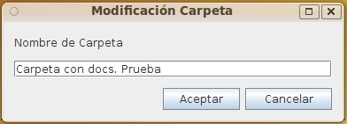

This form allows you to rename the selected folder. Does not allow modification of other metadata or security, for which should be used the extended modification.
You can enter/modify the following information:

Required fields for each document type are highlighted. By placing the cursor or mouse over each field, it whill be showed a tiptool or a text message in the bottom of the form with information on the field and (in the case of fields of type date or time) the expected format. The fields of type date / time values must be valid and follow the expected format, otherwise the field is cleared and the value is rejected.
In the event of an error (lack of user permissions, communication error, incorrect date, etc.), the operation is canceled and the user will communicate the reason for the error.
View Folder Extended modification